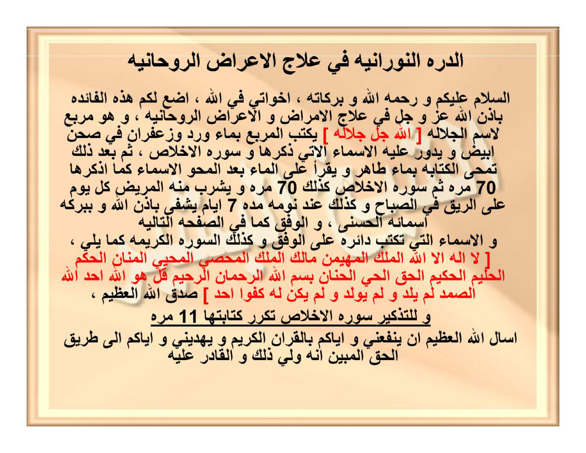

HALAMAN 17 — AD-DURRAH AN-NŪRĀNIYYAH 1/2 — الدُّرَّةُ النُّورَانِيَّةُ
arab
الدُّرَّةُ النُّورَانِيَّةُ فِي عِلَاجِ الْأَعْرَاضِ الرَّوْحَانِيَّةِ
السَّلَامُ عَلَيْكُمْ وَرَحْمَةُ اللهِ وَبَرَكَاتُهُ، إِخْوَتِي فِي اللهِ، أَضَعُ لَكُمْ هَذِهِ الْفَائِدَةَ بِإِذْنِ اللهِ عَزَّ وَجَلَّ فِي عِلَاجِ الْأَمْرَاضِ وَالْأَعْرَاضِ الرَّوْحَانِيَّةِ، وَهُوَ مُرَبَّعٌ لِاسْمِ الْجَلَالَةِ [اللهُ جَلَّ جَلَالُهُ] يُكْتَبُ الْمُرَبَّعُ بِمَاءِ وَرْدٍ وَزَعْفَرَانٍ فِي صَحْنٍ أَبْيَضَ وَيَدُورُ عَلَيْهِ الْأَسْمَاءُ الَّتِي ذَكَرَهَا وَسُورَةُ الْإِخْلَاصِ، ثُمَّ بَعْدَ ذَلِكَ تُمْحَى الْكِتَابَةُ بِمَاءٍ طَاهِرٍ وَيُقْرَأُ عَلَى الْمَاءِ بَعْدَ الْمَحْوِ الْأَسْمَاءُ كَمَا ذَكَرَهَا سَبْعِينَ مَرَّةً ثُمَّ سُورَةُ الْإِخْلَاصِ كَذَلِكَ سَبْعِينَ مَرَّةً وَيَشْرَبُ مِنْهُ الْمَرِيضُ كُلَّ يَوْمٍ عَلَى الرِّيقِ فِي الصَّبَاحِ وَكَذَلِكَ عِنْدَ نَوْمِهِ مُدَّةَ سَبْعَةِ أَيَّامٍ يَشْفَى بِإِذْنِ اللهِ وَبِبَرَكَةِ أَسْمَائِهِ الْحُسْنَى، وَالْوَفْقُ كَمَا فِي الصَّفْحَةِ التَّالِيَةِ
وَالْأَسْمَاءُ الَّتِي تُكْتَبُ دَائِرَةً عَلَى الْوَفْقِ وَكَذَلِكَ السُّورَةُ الْكَرِيمَةُ كَمَا يَلِي، [لَا إِلَهَ إِلَّا اللهُ الْمَلِكُ الْمُهَيْمِنُ مَالِكُ الْمُلْكِ الْمُحْصِي الْمُحْيِي الْمَنَّانُ الْحَكَمُ الْحَلِيمُ الْحَكِيمُ الْحَقُّ الْحَيُّ الْحَنَّانُ بِسْمِ اللهِ الرَّحْمَنِ الرَّحِيمِ قُلْ هُوَ اللهُ أَحَدٌ اللهُ الصَّمَدُ لَمْ يَلِدْ وَلَمْ يُولَدْ وَلَمْ يَكُن لَّهُ كُفُوًا أَحَدٌ] صَدَقَ اللهُ الْعَظِيمُ،
وَلِلتَّذْكِيرِ سُورَةُ الْإِخْلَاصِ تُكَرَّرُ كِتَابَتُهَا إِحْدَى عَشْرَةَ مَرَّةً
أَسْأَلُ اللهَ الْعَظِيمَ أَنْ يَنْفَعَنِي وَإِيَّاكُمْ بِالْقُرْآنِ الْكَرِيمِ وَيَهْدِيَنِي وَإِيَّاكُمْ إِلَى طَرِيقِ الْحَقِّ الْمُبِينِ إِنَّهُ وَلِيُّ ذَلِكَ وَالْقَادِرُ عَلَيْهِ
latin
Ad-Durratun-Nūrāniyyatu fī ‘ilājil-a‘rādhir-rūḥāniyyah
As-salāmu ‘alaikum wa raḥmatullāhi wa barakātuh, ikhwatī fillāh, aḍa‘u lakum hādzihil-fā’idata bi-idznillāhi ‘azza wa jalla fī ‘ilājil-amrāḍi wal-a‘rāḍir-rūḥāniyyati, wa huwa murabba‘un li-smil-jalālati [Allāhu jalla jalāluh] yuktabul-murabba‘u bimā’i wardin wa za‘farānin fī ṣaḥnin abyaḍa wa yadūru ‘alaihil-asmā’ul-latī dzakarahā wa sūratul-Ikhlāṣi, tsumma ba‘da dzālika tumḥal-kitābatu bimā’in ṭāhirin wa yuqra’u ‘alal-mā’i ba‘dal-maḥwi al-asmā’u kamā dzakarahā sab‘īna marratan tsumma sūratul-Ikhlāṣi ka-dzālika sab‘īna marratan wa yasyrabu minhul-marīḍu kulla yawmin ‘alar-rīqi fish-shabāḥi wa ka-dzālika ‘inda naumihi muddata sab‘ati ayyāmin yasyfā bi-idznillāhi wa bi-barakati asmā’ihil-ḥusnā, wal-wafqu kamā fish-shafḥatit-tāliyah.
Wal-asmā’ul-latī tuktabu dā’iratan ‘alal-wafqi wa ka-dzālikas-sūratul-karīmatu kamā yalī, [Lā ilāha illallāhul-Malikul-Muhaiminu Mālikul-Mulki al-Muḥshī al-Muḥyī al-Mannān al-Ḥakam al-Ḥalīm al-Ḥakīm al-Ḥaqq al-Ḥayy al-Ḥannān bismillāhir-raḥmānir-raḥīmi qul huwallāhu aḥadun Allāhush-shamadu lam yalid wa lam yūlad wa lam yakul-lahū kufuwan aḥad] shadaqallāhul-‘aẓīm,
Wa lit-tadzkīri sūratul-Ikhlāṣi tukarraru kitābatuhā iḥdā ‘asyrata marratan.
As’alullāhal-‘aẓīma an yanfa‘anī wa iyyākum bil-Qur’ānil-karīmi wa yahdiyanī wa iyyākum ilā ṭarīqil-ḥaqqil-mubīni innahū waliyyu dzālika wal-qādiru ‘alaih.
Terjemahan
Al-Durrah al-Nūrāniyyah (Mutiara Bercahaya) dalam pengobatan gejala-gejala ruhaniyyah:
“Assalāmu‘alaikum warahmatullāhi wabarakātuh, wahai saudara-saudaraku karena Allah, aku persembahkan kepada kalian faedah ini — dengan izin Allah ‘Azza wa Jalla — untuk mengobati penyakit-penyakit dan gejala-gejala ruhaniyyah. Faedah ini berupa **murabba‘ (kotak 4×4) untuk Ism al-Jalālah [Allāh Jalla Jalāluh]**. Murabba‘ tersebut **ditulis dengan air mawar dan za‘farān di dalam piring putih**, kemudian **di sekelilingnya ditulis asma’-asma’ yang akan disebutkan beserta Surah al-Ikhlāsh**. Setelah itu tulisan **dihapus dengan air suci**, lalu **dibacakan pada air tersebut — setelah penghapusan — asma’-asma’ sebagaimana yang ia sebutkan sebanyak 70 kali, kemudian Surah al-Ikhlāsh juga 70 kali**. Air itu **diminum oleh orang sakit setiap hari pada pagi hari dalam keadaan perut kosong dan juga menjelang tidurnya selama 7 hari, maka ia akan sembuh dengan izin Allah dan berkah Asmā’ Allāh al-Ḥusnā**. Dan wafaqnya sebagaimana pada halaman berikutnya.
Adapun asma’-asma’ yang ditulis **mengelilingi wafaq** dan juga Surah yang mulia tersebut adalah sebagai berikut: **[Lā ilāha illallāh, al-Malik, al-Muhaimin, Mālik al-Mulk, al-Muḥshī, al-Muḥyī, al-Mannān, al-Ḥakam, al-Ḥalīm, al-Ḥakīm, al-Ḥaqq, al-Ḥayy, al-Ḥannān, Bismillāhir-Raḥmānir-Raḥīm, Qul Huwallāhu Aḥad, Allāhush-Shamad, Lam yalid wa lam yūlad, wa lam yakul-lahū kufuwan aḥad]** — *Shadaqallāhul-‘Aẓīm*.
Dan sebagai pengingat: **Surah al-Ikhlāsh diulang penulisannya sebanyak 11 kali** (mengelilingi wafaq).
Aku memohon kepada Allah Yang Maha Agung semoga Dia memberiku manfaat — dan kalian — dengan al-Qur’ān al-Karīm, serta memberi petunjuk kepadaku dan kepada kalian menuju jalan kebenaran yang nyata. Sesungguhnya Dialah penolongnya dan Yang Maha Kuasa atasnya.”
Syarah dan Penjelasan
Halaman ini adalah **bagian 1/2 Durrah Nūrāniyyah — faedah ‘ilāj a‘rāḍ ruhaniyyah dengan murabba‘ al-Jalālah**. Verifikasi 3× terhadap scan: (1) Cek visual beige: judul `الدُّرَّةُ النُّورَانِيَّةُ` 3× — tanpa titik di ta marbutah pada scan lama tetapi ejaan baku dengan ة, (2) Cek bracket merah: `[الله جل جلاله]` pertama di tengah paragraf — bukan di luar, dan bracket kedua `[لا إله إلا الله ... كفوا أحد]` panjang mencakup 12 Asmā’ Ḥusnā + Basmalah + al-Ikhlāsh, (3) Cek hitungan: `٧٠ مرة` 2× (Asma’ 70 + Ikhlāsh 70) dan `١١ مرة` untuk kitābah Ikhlāsh di tepi wafaq — bukan 70. Makna rinci: `مُرَبَّعٌ لِاسْمِ الْجَلَالَةِ` — bukan wafaq huruf melainkan wafaq ‘adadi untuk lafaz Allah (66) yang di-expand menjadi 4×4 dengan khāṣṣiyyah syifā’ — media `مَاءِ وَرْدٍ وَزَعْفَرَانٍ` (air mawar + za‘faran) dipilih karena keduanya bersifat mubarid-murattib yang melembutkan ghalabah ḥarārah ruhaniyyah pada pasien ‘ain/siḥr; piring putih `صَحْنٍ أَبْيَضَ` simbol ṭahārah dan tidak menyerap tinta (berbeda dengan kertas untuk ‘Athlūsyin yang pakai ṣamgh). Prosedur 3-lapis: (1) Kitābah — murabba‘ 4×4 ditulis + 12 asmā’ + Basmalah + Ikhlāsh mengelilingi — Ikhlāsh ditulis 11× (tawkīd) di tepi, (2) Maḥw — hapus dengan `مَاءٍ طَاهِرٍ` (air suci dari hujan/sumur, tidak tercampur najasah), (3) Qirā’ah ‘alal-mā’ — baca Asma’ 70× + Ikhlāsh 70× — angka 70 = 7×10 — 7 hari, 10 kesempurnaan — menyatukan shifā’ jasadi wa ruhaniyyah, (4) Syurb — minum ‘alar-rīq (perut kosong) pagi + sebelum tidur 7 hari — waktu mustajāb untuk penyerapan ruhaniyyah. Ism Jalālah `[الله جل جلاله]` di tengah wafaq sebagai qutb — berbeda dengan wafaq ‘Athlūsyin yang qutb-nya nama musuh — di sini qutb adalah tauhid. 12 Asmā’ Ḥusnā terpilih bukan acak: Malik-Muhaimin-Malik al-Mulk (rububiyyah), Muḥshī-Muḥyī-Mannān-Ḥakam-Ḥalīm-Ḥakīm-Ḥaqq-Ḥayy-Ḥannān (ṣifāt syifā’ dan ḥikmah) — semua bersesuaian dengan ‘ilāj. Penutup doa `أَسْأَلُ اللهَ ... وَلِيُّ ذَلِكَ وَالْقَادِرُ عَلَيْهِ` adalah doa muallif khas Qādiriyyah — bukan bagian wafaq.
Khususiyah dan Tatacara Praktik
Kegunaan: syifā’ bi-idznillāh untuk `الأمراض والأعراض الروحانية` — mencakup gangguan ‘ain, mass khafīf, waswas, insomnia ruhaniyyah, dan gejala psikosomatik akibat siḥr — bukan untuk ‘Athlūsyin (perusak amal) melainkan untuk pasien. Tatacara rinci: (1) Siapkan piring porselen putih bersih (bukan logam) — cuci dengan air dan garam, (2) Tinta: air mawar ṭahūr + za‘faran asli (saffron stigma, bukan pewarna) — larutkan hingga warna keemasan, (3) Tulis murabba‘ 4×4 (16 sel) dengan angka Arab di tengah — lihat Hal18 untuk angka persis — dengan qalam bambu, (4) Kelilingi murabba‘ dengan 12 Asmā’ `[Lā ilāha illallāh ... al-Ḥannān]` + Basmalah + Ikhlāsh — Ikhlāsh ditulis 11× berturutan tanpa putus di sekeliling (seperti lingkaran), (5) Hapus tulisan dengan air ṭāhir (air hujan yang belum menyentuh tanah lebih utama, atau air zamzam) — tuang ke gelas kaca, (6) Bacakan pada air: 12 Asmā’ `[Lā ilāha illallāh ... al-Ḥannān]` + Basmalah + Ikhlāsh — masing-masing rangkaian 70× (bukan masing-masing asma’ 70×, melainkan keseluruhan bracket 70×), kemudian Surah al-Ikhlāsh 70× terpisah — total 140 kali bacaan (70+70) — di atas air dengan nafas menyentuh permukaan, (7) Minum: setiap pagi ‘alar-rīq (sebelum makan/minum apapun) dan malam sebelum tidur — 1 gelas tiap waktu — selama 7 hari tanpa jeda — simpan air di kulkas suci (jangan bercampur makanan najis), (8) Pantangan: jaga wuḍū’, hindari makanan ḥarām dan ghibah selama 7 hari, (9) Tanda syifā’: mimpi cahaya, keringat dingin hilang, atau gejala mereda hari ke-3-4 — lanjutkan hingga 7 hari sempurna, (10) Peringatan: jangan menulis wafaq dengan tinta kimia/spidol — za‘farān bersifat ghizā’ ruhaniyyah, bukan sekadar pewarna — dan jangan membaca terbalik (urutan: Asma’ dulu 70× baru Ikhlāsh 70×).

[Gambar: Halaman 17 — Durrah Nūrāniyyah — Murabba‘ Jalālah — 70× + 11× Ikhlāsh]

[Gambar: HALAMAN 17 — AD-DURRAH AN-NŪRĀNIYYAH 1/2 — الدُّرَّةُ النُّورَانِيَّةُ]